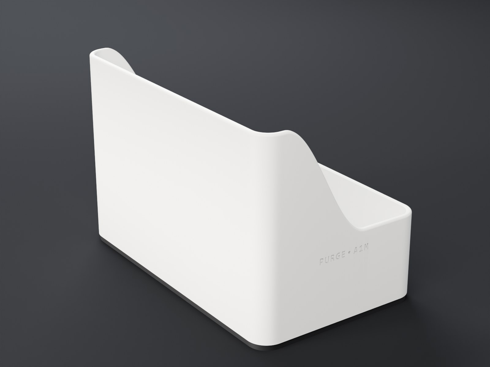
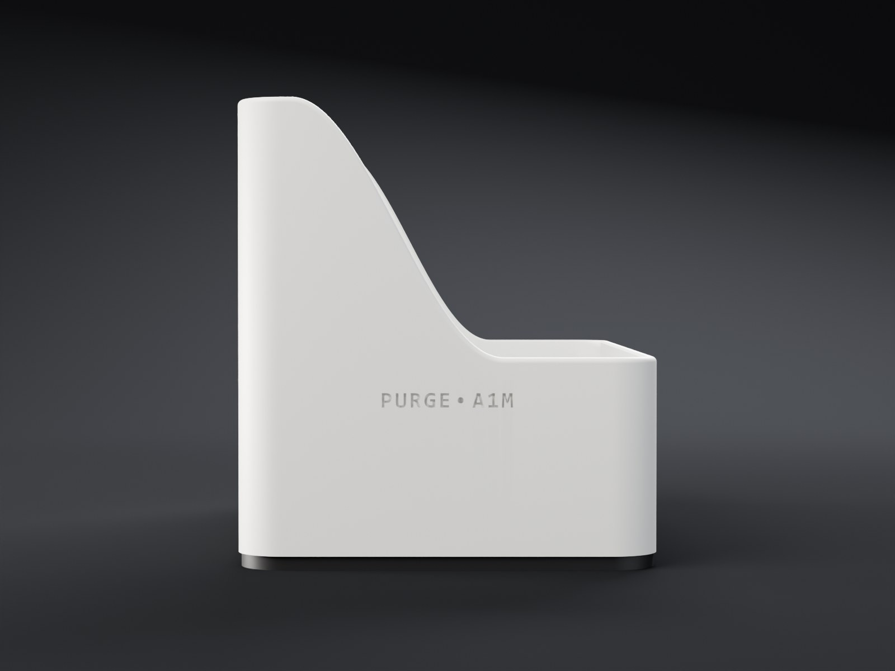
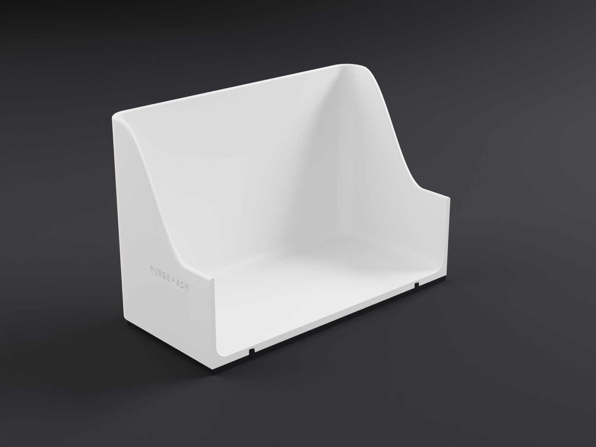
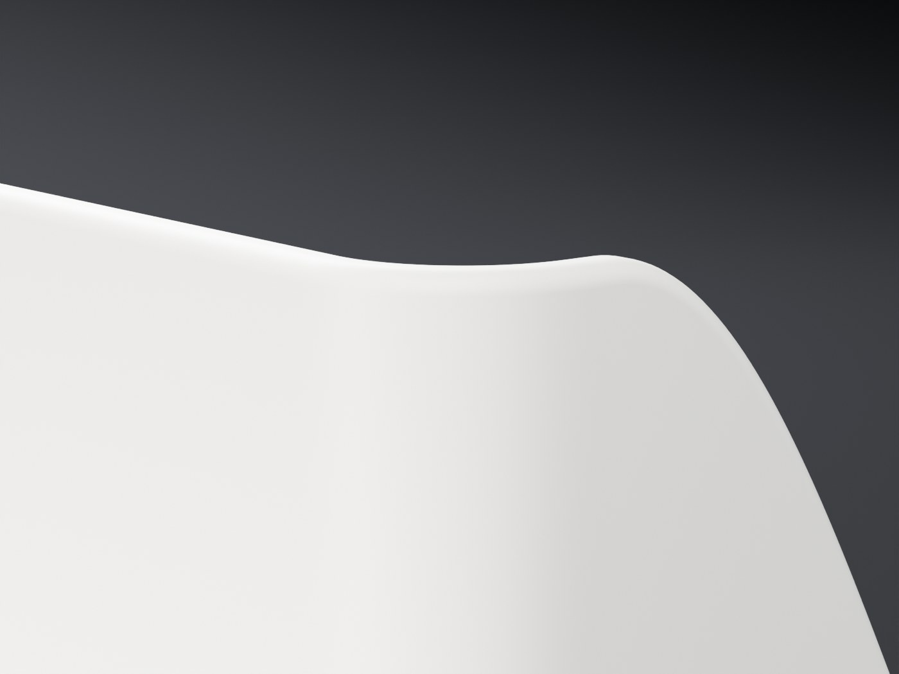
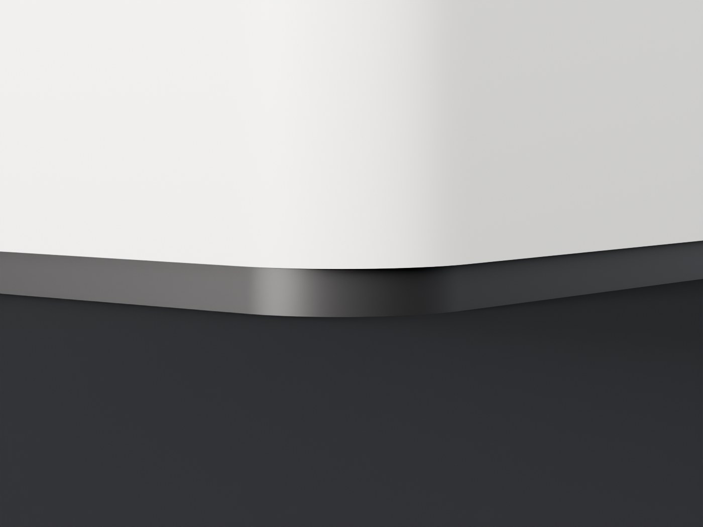
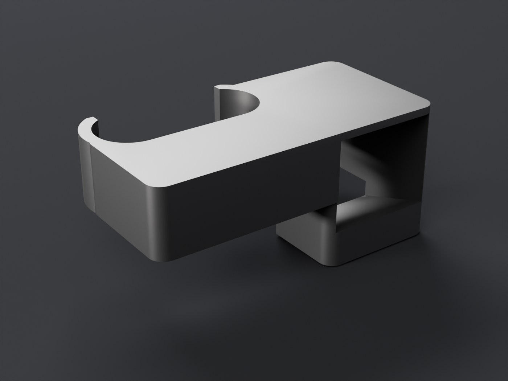
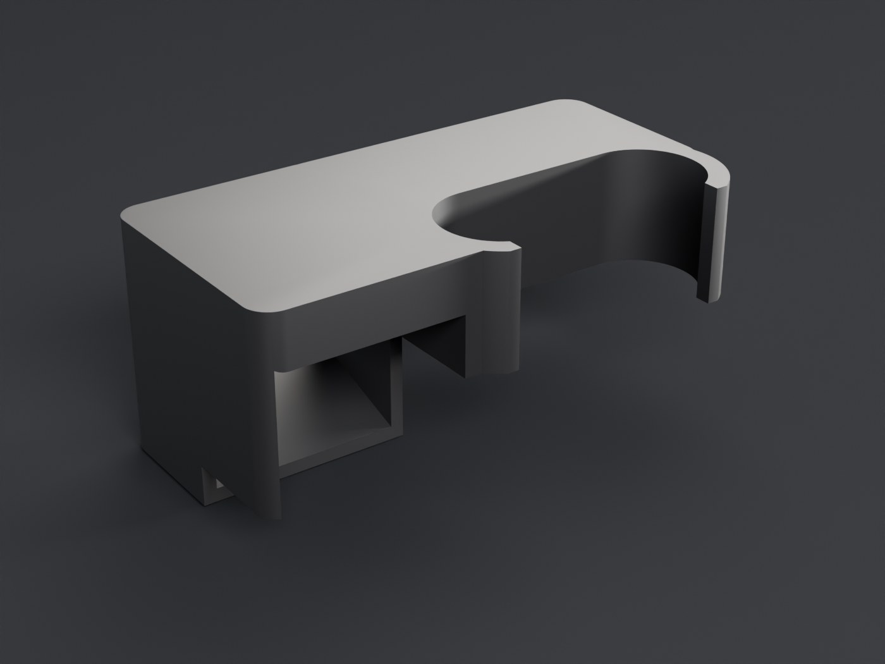
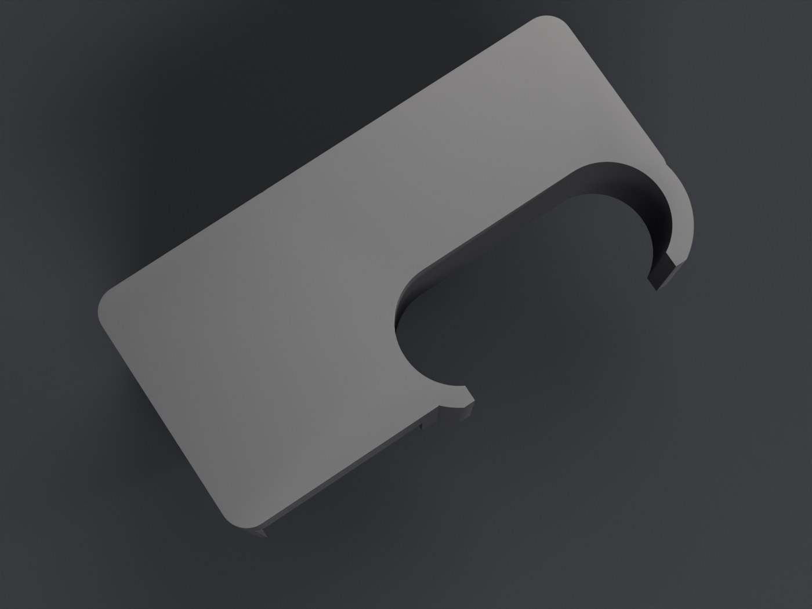
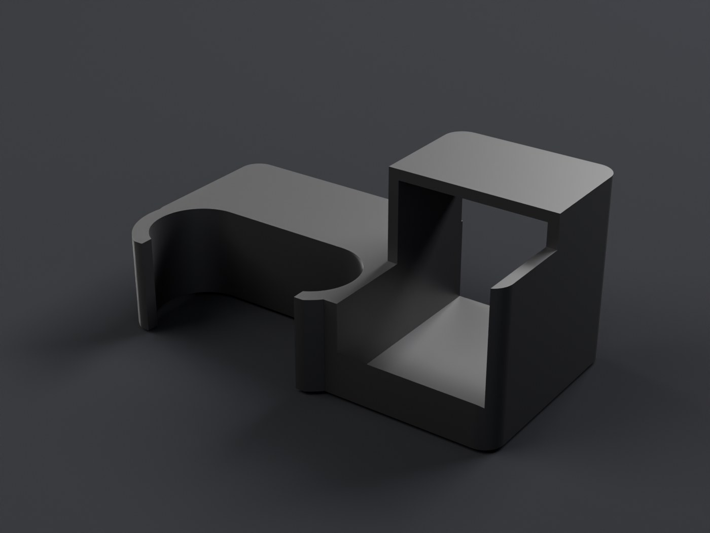
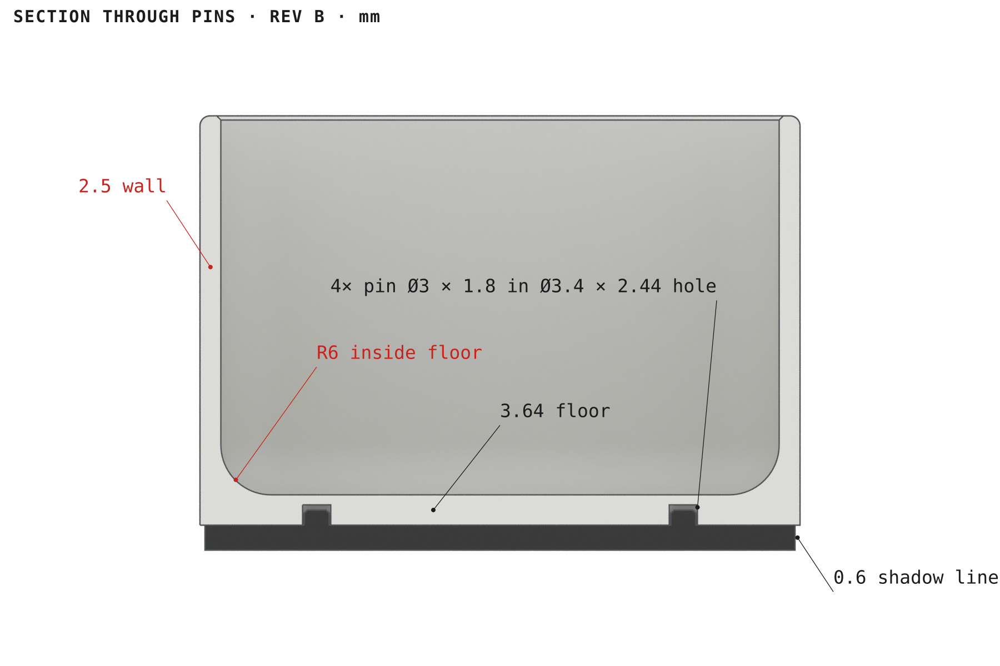

Purge Bin
Rev C adds a backboard. The rim stays low on the printer side so it tucks under the gantry, then sweeps up in one S-curve to a 100 mm wall that catches purge flung sideways. A small black deflector clips onto the nozzle wiper and drops most purge straight down. The bin is wider for a steadier footprint, and the label's letters are now cut at 45° so their tops don't sag.

What it assumes about your printer
Printer side, 45 mm. You measured 70 mm under the gantry's left end. The deflector hangs about 14 mm below the wiper, so the low rim keeps 11 mm clear of it. purge_bin.py stops the build if that drops under 5 mm.
Backboard, 100 mm. The rim passes 70 mm only in the far 55 mm of the width (more than 35 mm from the printer side). Nothing on the printer may pass over that zone at its lowest Z. Please check this against the gantry end before the long print.
Not measured yet: the deflector's real height and where its drop opening sits over the bin. Clip it on, lower Z, and look. The low end is 85 × 145 mm inside, so it has room to be off a little.
Around the bin




Close-ups



Clips on the wiper, drops purge straight down
The mount and outer envelope come from the community design you found ("Poop deflector (A1, A1 mini, AMS)"), measured from its STEP. The C-clip wraps the two round ends of the wiper's 34.4 × 14.2 mm oval. The hood is open on the side purge comes from, has a roof with a 45° lip, and a ramp that ends in a 22 × 14 mm drop opening. It stays inside the reference's outline everywhere, so it can't reach printer parts we haven't measured. House style: black, one continuous R1.2 top edge, no logo.




Heat: the air there stays well under PLA's ~55 °C softening point, but fresh purge lands on the ramp at about 220 °C and can weld to PLA. Print it in PETG if you have it, since PLA doesn't stick to PETG. Otherwise line the ramp with kapton or aluminium tape, as the original's author recommends.
Dimensions
Click any image to open it full size; click again for 1:1 pixels.



Layer lines and squashed letters
Letter tops compressed
Each letter was a pocket with a flat ceiling, which is an unsupported overhang on a vertical wall, so it sagged. The cut now slopes 45° downward into the wall, so every ceiling is self-supporting. Checked in the G-code: no layer overhangs the one below by more than 0.19 mm at the face (rev B had 0.6 mm spans). It's now the default for every S.product_label().
Visible layer lines
Likely cause: the inner walls ran at about 300 mm/s and 6000 mm/s² right behind a 60 mm/s outer wall, so nozzle pressure swung on every loop. Rev C slows them to 120 mm/s and 3000 mm/s². That's still a guess, so I made a 1 h 11 m coupon (a piece of the front wall with the label and the low rim) at the new settings. Compare it with your rev B bin before committing 8 hours. If the lines persist, run flow-dynamics calibration for PLA Matte next.
What the review found, and what changed
Independent review of both parts: geometry, mesh health, and the sliced G-code, layer by layer.
Deflector clip 1.8 mm loose
I'd modelled the wiper oval as 16 mm deep; the reference cavity is 14.2 with R7.1 ends. Corrected, so the clip grips like the original.
Seam rode the curve on the label face
With the shell turned 90°, every layer above 45 mm started its wall on the S-curve crest of the front face. The shell now sits with its back end to the bed's back: 1,115 of 1,211 layers start on the plain back end, and the rest are inside the pin holes or the engraved letters. The 150 mm backboard now also runs along the bed's travel, not across it.
Deflector reached below the reference outline
Its outer hood wall went down to z 0 in front of the wiper, where the original has nothing and we haven't measured. Trimmed to match.
36 mm bridge inside the clip
The hollowed clip block needed a long bridge right under the wiper seat. The block is solid again; sparse infill hollows it anyway.
Rim fillet thinned on the steep curve
It was offset straight down, which shrank it to 0.55 mm at 62°. It's now built square to the rim.
Grooves where the deflector's blocks met
Two rounded blocks met in a half-fillet groove. The whole top outline is now filleted in one pass, after every cut.
Backboard stiffness
The 2.5 mm wall with its returns works as a U-channel: under 0.5 mm of flex at the top for 1 N. Purge hitting it is negligible.
Coupon first, then three parts
0 · Wall coupon · white
- File
print_coupon_white.gcode.3mf- Time
- 1 h 11 m · ~12 g
- Why
- Checks the layer-line and label fixes
1 · Deflector · black
- File
print_deflector_black.gcode.3mf- Time
- 38 m · ~11 g
- Orientation
- On its entry face, no supports
2 · Shell · white
- File
print_shell_white.gcode.3mf- Time
- 8 h 21 m · ~128 g
- Orientation
- Upright, back end to the bed's back
3 · Base · black
- File
print_base_black.gcode.3mf- Time
- 41 m · ~29 g
- Orientation
- Flat, pins up
- Shell and coupon: 0.08mm Extra Fine, outer wall 60 mm/s at 2000 mm/s², inner walls 120 mm/s at 3000 mm/s², 3 walls, 12 top layers, seam at back, elephant-foot compensation 0.15.
- Do the deflector before the shell. Clip it on, then check where the purge drops and how far it hangs at the lowest Z.
- Times are Bambu Studio CLI estimates. Nothing has been sent to the printer.
Where the ideas came from
- Deflector mount and envelope: "Poop deflector (A1, A1 mini, AMS)" and its compact bucket, from MakerWorld (the STEP files you sent).
- Other references: A1 Purge Waste Bin and Deflector, A1 Mini Side Tray "Slim", and Bambu's purge wiper page.